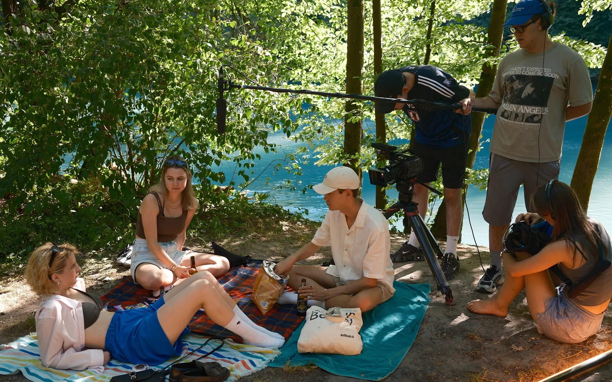
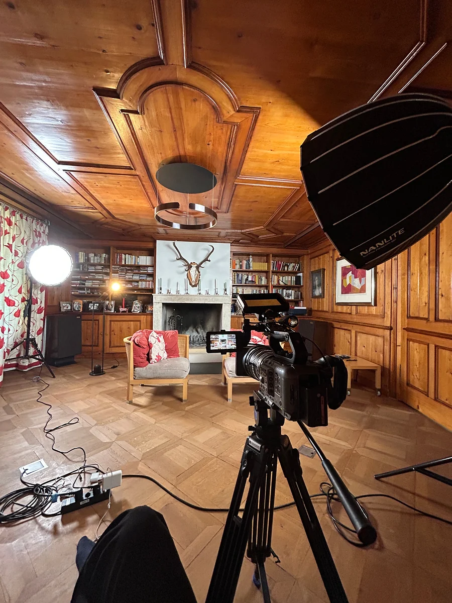
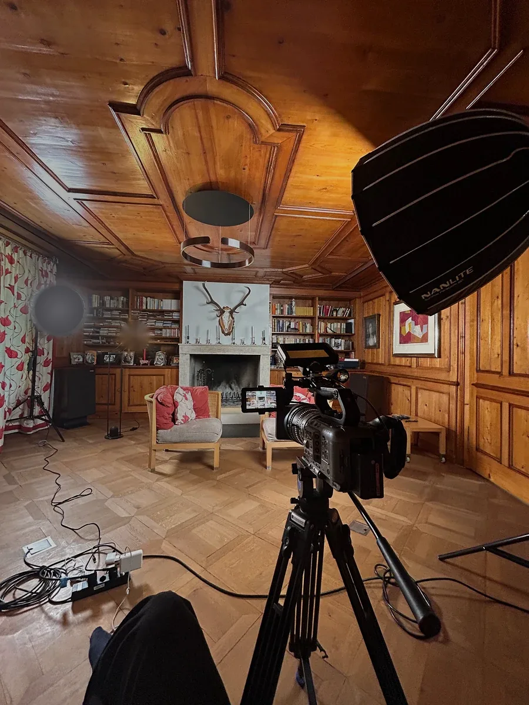
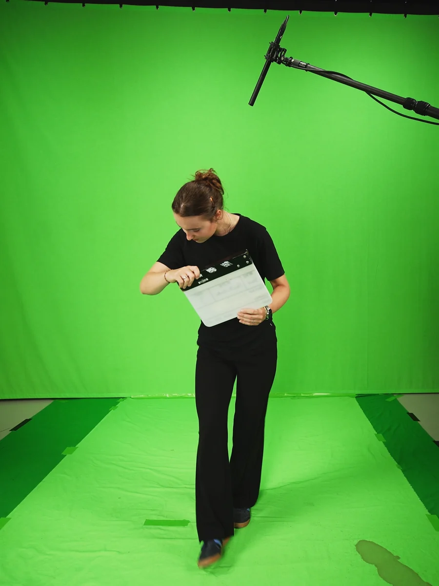

Jule Buchmann – Filmemacherin aus Bern: Dokumentarfilm, Imagefilm und Werbefilm, Regie und Kamera
Regie · Kamera · Dokumentarfilm · Imagefilm · Werbefilm
Immer im Geschehen.
Mit der Kamera nah an den Menschen und am Leben.
Für Geschichten, die es wert sind, erzählt zu werden.
Arbeiten — Bild anklicken für das ganze Video
Was ich mache — Hinter der Kamera



